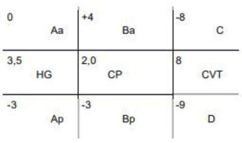
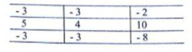
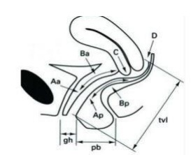
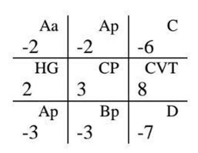

Questão 1 · Prolapsos de órgãos pélvicos · 4000120265Comparando-se as queixas clínicas de pacientes com prolapso genital estádio I a IV, pode-se observar que mulheres com estadio
A I têm mais dificuldade em segurar flatos.
B II têm mais obstipação intestinal.
C IV têm mais dificuldade em esvaziar a bexiga.
D III têm mais perda de urina aos esforços.
E I têm mais sangramento por úlcera de decúbito.
Questão 2 · Prolapsos de órgãos pélvicos · 4000101076Mulher, 55 anos, relata queixa de “bexiga caída”, que piora com esforço físico e eventual di culdade de esvaziamento vesical. Ao exame ginecológico, identi camos, segundo a classificação da ICS, o seguinte: ponto Aa + 4; ponto Ba + 4; ponto C − 6; ponto D − 8 CVT 10; ponto Ap 0; ponto Bp 0. O diagnóstico é?
A Prolapso uterino sem alongamento hipertrófico do colo, ausência de distopia de paredes vaginais.
B Prolapso uterino com alongamento hipertrófico do colo, sem procidência de parede vaginal anterior e procidência de parede vaginal posterior acentuada.
C Ausência de prolapso uterino, presença de alongamento hipertrófico de colo, com distopia acentuada de paredes vaginais anterior e posterior.
D Ausência de prolapso uterino e de hipertrofia de colo, presença de procidência moderada de parede vaginal anterior e distopia discreta de parede vaginal posterior.
Questão 3 · Anatomia do Assoalho Pélvico · 4000089195A paciente que apresenta lesão no diafragma urogenital lesiona os músculos:
A levantadores do ânus e coccígeo
B transverso profundo do períneo e coccígeo
C transverso profundo e transverso superficial do períneo
D levantadores do ânus e transverso superficial do períneo
Questão 4 · Anatomia do Assoalho Pélvico · 4000078583Fisiologicamente, o músculo levantador do ânus normal mantém um estado constante de contração, que provê um soalho sólido capaz de suportar o peso do conteúdo abdominopélvico contra as pressões intra- abdominais.Esta musculatura é uma unidade complexa formada por diversos componentes musculares. Os músculos que compõe o levantador do ânus são:
A pubococcígeo, iliococcígeo e puborretal.
B pubococcígeo, transverso superficial do períneo e piriforme.
C puborretal, isquiocavernoso, bulbocavernoso.
D transverso superficial do períneo, iliococcígeo e bulbocavernoso.
E transverso profundo do períneo, isquiocavernoso e puborretal.
Questão 5 · Cirúrgico · 4000059115Assinale a alternativa que preenche corretamente as lacunas do parágrafo a seguir: O (A) _______________ é a técnica mais utilizada na correção dos prolapsos da parede vaginal anterior e consiste na correção dos defeitos do(a) _______________
A sling autólogo; fáscia endopélvica
B reparo paravaginal; elevador do ânus
C sacrocolpopexia; fáscia retovaginal
D colpoplastia anterior; fáscia pubocervical
E colpossuspensão; arco tendíneo da fáscia pélvica
Questão 6 · Tratamento · Classif icação · 4000050647Paciente, com 55 anos de idade, vem à consulta relatando como queixa principal sensação de “bola na vagina”. No exame ginecológico, foi constatada a presença de prolapso uterino de grau IV na classificação de Baden-Walker. Com relação à conduta nesse caso, assinale a alternativa correta.
A O uso do estrogênio tópico está indicado nesse caso como terapêutica definitiva.
B O procedimento reconstrutivo é a primeira linha de tratamento em relação ao obliterativo.
C O tratamento expectante deverá ser priorizado em relação ao procedimento obliterativo.
D Após a correção cirúrgica do prolapso, indica-se o uso de estrogênio tópico e exercícios vaginais.
E A histerectomia vaginal é o tratamento de eleição para a correção do prolapso quando existe a concomitância de descenso do colo do útero.
Questão 7 · Anatomia do Assoalho Pélvico · 4000047600O suporte vaginal foi dividido didaticamente por DeLancey em três níveis. Maria Augusta foi clinicamente diagnosticada com incontinência urinária por hipermobilidade uretral e ruptura perineal. O nível e a correlação das estruturas classificam o caso citado em
A nível I, vagina apical, desinserção dos ligamentos uterossacro e cardinal.
B nível I, vagina média, alteração da fusão do terço inferior da vagina com diafragma urogenital e corpo perineal.
C nível II, vagina média, desinserção da fáscia endopélvica.
D nível III, vagina distal, alteração da fusão do terço inferior da vagina com diafragma urogenital e corpo perineal.
E nível III, vagina distal, desinserção dos ligamentos uterossacro e cardinal.
Questão 8 · Conservador · 4000033081Mulher de 85 anos, com queixa de bola na vagina e di culdade miccional. Ao exame físico apresenta os seguintes achados segundo a classificação POP-Q: Aa=+3, Bp=+6, C=+7, CVT= 8, CP=3, HG=5, Ap= +3, Bp=+6, D=+5. Hipertensa de difícil controle pressórico e cardiopata. Qual tratamento mais indicado?
A Fisioterapia
B Histerectomia vaginal
C Pessário vaginal
D Colpoplastia anterior e posterior
Questão 9 · Classif icação · 4000032198Os prolapsos de órgão pélvico é um problema de saúde que afeta milhões de mulheres no mundo, e no nal da década de 90 foram quanti cado pela sociedade internacional de continência, (POP-Q). Sobre estes prolapsos e POP-Q está correto afirmar:
A As medidas de quantificação dos prolapsos devem ser feitas com paciente em litotomia e no repouso.
B Pacientes com o ponto Ba = 0 do POP-Q tem prolapso de vaginal anterior grau II independente do tamanho da vagina.
C Uma paciente com medida de D= -9 e C= -6 apresenta uma hipertrofia de colo.
D Uma lesão no nível I de sustentação da parede vaginal de acordo com os estudos de DeLancey pode levar há um alargamento do introito e deiscência perineal.
Revisar: possível letra faltando em enunciado
Questão 10 · Anatomia do Assoalho Pélvico · Obstetrícia · 4000017183Em relação ao assoalho pélvico, assinale a alternativa INCORRETA:
A O diafragma pélvico estende-se transversalmente de forma semelhante a uma rede através da pelve verdadeira, com um hiato central para a uretra, a vagina e o reto e pode ser dividido em dois componentes – os internos e os externos.
B O componente externo do diafragma pélvico origina-se do arco tendíneo, estendendo-se do osso pube até a espinha isquiática, que dá origem a fibras de diferentes direções, incluindo o músculo puboccígeo, o músculo iliococígeo e o músculo coccígeo.
C O componente interno do diafragma pélvico origina-se do osso pube acima e medialmente das origens do músculo pubococcígeo, porém mais espesso e mais forte.
D As fibras superiores do músculo puborretal formam uma alça ao redor do reto até a sínfise púbica e suas fibras inferiores inserem-se na borda inferior do osso púbis de cada lado.
Questão 11 · Cirúrgico · Classif icação · 4000125607Mulher de 69 anos vai ao ginecologista com relato de “sensação de peso na vagina” há cerca de cinco anos. A atividade sexual é regular, com frequência quinzenal. É diabética e hipertensa, em uso de glibenclamida e enalapril 5 mg. Informa ter tido cinco gestações a termo, com partos vaginais e 2 abortos. Durante exame ginecológico foi observado prolapso genital. Seguindo a classificação da Sociedade Internacional de Continência (POP-Q), foram anotados os seguintes achados: Legenda: HG: hiato genital; CP: corpo perineal; CVT: comprimento vaginal total; Aa: ponto A da parede anterior; Ba: ponto B da parede anterior; C: ponto C; Ap: ponto A da parede posterior; Bp: ponto B da parede posterior; D: ponto D; Marque a alternativa que contenha o estadiamento CORRETO do prolapso e o tratamento mais adequado, respectivamente:

A estádio III – colpocleise.
B estádio II – colposacrofixação.
C estádio III – colporrafia anterior.
D estádio II – histerectomia vaginal.
E estádio III – histerectomia vaginal.
Questão 12 · Conservador · 4000101451O uso de pessários para o tratamento conservador do prolapso genital feminino tem recebido muita atenção da literatura médica nos últimos anos. Em pacientes com prolapso genital estádios II a III da ICS (International Continence Society) e com intróito vaginal de tamanho normal, o tipo de pessário mais utilizado é:
A Donuts
B Gellhorn
C Anel
D Cubo
Questão 13 · Conceitos · 4000096963Em relação às estruturas abaixo: I. Músculo pubococcígeo. II. Músculobulbocavernoso. III. Músculo ísquiocavernoso. IV. Músculo transverso superficial do períneo. O chamado Triangulo Urogenital Anterior é composto por:
A I e II.
B I e III.
C II, III e IV.
D I, II e IV.
Questão 14 · Cirúrgico · 4000085659A colpocleise está indicada para tratamento de prolapso uterino na paciente:
A Que ainda deseja engravidar.
B Idosa sem vida sexual ativa.
C Com incontinência urinária de esforço associada.
D Com hiperatividade do detrusor associada.
Questão 15 · Fatores de risco · 4000053720É considerado fator de risco para prolapso de órgão pélvico:
A Cesariana eletiva
B Doença pulmonar obstrutiva
C Hipertensão arterial
D Diabetes
Questão 16 · Classif icação · 4000049026Mulher de 64 anos, G6P6, partos vaginais, procura o ambulatório de ginecologia, por apresentar uma "bola" na vagina há um ano. Nega perda involuntária de urina. Hipertensa e diabética, usa inibidor da enzima conversora da angiotensina e metformina. Nega passado cirúrgico. O exame ginecológico é compatível com o sexo e a idade, no entanto apresenta a seguinte avaliação, segundo o POP-q: Qual o provável diagnóstico para essa paciente?

A Prolapso de parede anterior EII
B Prolapso de parede posterior EI
C Rotura perineal grau 3
D Hipertrofia de colo uterino
E Polapso apical EIV
Questão 17 · Classif icação · 4000039853Os Prolapsos de Órgãos Pélvicos (POP) são um problema de saúde que afeta milhões de mulheres no mundo. Sobre essa patologia está CORRETO afirmar que:
A Não há diferenças de prevalência de POP entre as raças.
B A International Continence Society definiu uma classificação dos prolapsos com medidas específicas. Nessa classificação, um prolapso de parede vaginal anterior com medida do ponto Ba = - 2 indicaria um prolapso grau 1.
C O prolapso vaginal posterior causa o sintoma de constipação intestinal que indica a correção cirúrgica.
D A correlação entre os sintomas e a progressão da classificação do POP é evidente.
Questão 18 · Cirúrgico · 4000022393A colpoplastia com técnica de kelly-kennedy é indicada para:
A Incontinência urinária de esforço;
B Retocele;
C Cistocele com defeito central;
D Prolapso uterino grau I;
Questão 19 · Cirúrgico · Slings · 4000020040Mulher, 77 anos, sem vida sexual, apresenta queixa de bola na vagina. Ao exame: POP-Q — Aa +2; Ba +2; C -6; HG 4; CP 4; CVT 8; Ap -2; Bp -2; D ---. Ao teste de esforço com redução do prolapso observa-se perda urinária, sincrônica à tosse. Estudo urodinâmico com redução do prolapso evidenciou pressão de perda de 120 cm H₂O. Qual a melhor conduta?
A Colpocleise e sling retropúbico.
B Colpoplastia anterior e sling transobturatório.
C Reeducação miccional e fisioterapia do assoalho pélvico.
D Colpoplastia anterior e fixação de cúpula em ligamento sacroespinhal.
Questão 20 · Fatores de risco · 4000018672Que fatores de risco podem se relacionar à ocorrência de distopias genitais?
A Tabagismo, paridade, história familiar de distopias.
B Cirurgias pélvicas prévias, baixo nível sócio econômico, DPOC.
C Idade avançada, lacerações perineais pós parto, sedentarismo.
D Osteoporose, esclerose múltipla, hipoestrogenismo.
E Nenhuma das anteriores.
Questão 21 · Diagnóstico · 4000017566Uma senhora de 56 anos, G4A0P4, todos partos vaginais, apresenta constipação há cerca de 30 anos, após o nascimento do primeiro lho, com piora progressiva. Atualmente, consegue evacuar todos os dias porém com necessidade de esforço intenso, chegando a car sentada no aparelho sanitário por até uma hora e às vezes necessitando de digitação para remoção das fezes, o que lhe causa grande impacto em qualidade de vida. Já tentou o tratamento com laxativos, bras alimentares e mudança de hábitos de vida sem sucesso. Já realizou exame de manometria anorretal que foi normal. Qual o diagnóstico mais provável?
A Inércia colônica.
B Síndrome do intestino irritável.
C Prolapso de parede vaginal posterior (retocele).
D Síndrome da contração paradoxal do puborretal (anismo).
Questão 22 · Classif icação · 4000011615O aumento da expectativa de vida na população em geral permite maior observação de afecções mais prevalentes na faixa etária mais avançada, como os prolapsos de órgãos pélvicos (POP). Apesar de não haver ameaça a vida, é uma causa importante de morbidade. Para auxiliar no diagnóstico, a Sociedade Internacional de Continência (ICS) aprovou o sistema de Quanti cação dos Prolapsos de Órgãos Pélvicos (POP-Q), o qual permite avaliar e determinar o tipo e a gravidade dos prolapsos através de pontos pré-determinados, como visto na figura a seguir. Em relação ao POP-Q, qual a alternativa correta?

A Os pontos são medidos em milímetros e podem ser negativos ou positivos.
B Mesmo existindo a presença dos pontos C e D, a avaliação do compartimento apical é facultativa.
C Com o advento do POP-Q, não é mais necessário avaliar o órgão genital externo à manobra de Valsalva.
D Proporciona padronização das medidas,permitindo, assim, uniformização dos resultados vistos por diferentes observadores.
E Pode-se afirmar que é um sistema mais elaborado para auxiliar no diagnóstico preciso dos prolapsos genitais e vem sendo adotado na prática clínica pela maioria dos médicos.
Questão 23 · Incontinência urinária · Prolapsos de órgãos pélvicos · 4000006767Mulher, 52 anos de idade, refere “bola na vagina” há 5 anos e urgeincontinência urinária há 1 ano. Ao exame físico observa- se o seguinte POP-Q: Aa = +3, Ap = +1, Ba = +4, Bp = +1, C = -7, D = -8, HG = 6, CP = 2, CVT = 9. Qual o diagnóstico e a melhor conduta?
A Prolapso vaginal completo, histerectomia vaginal com fixação sacroespinhal da cúpula e anticolinérgico no pós- operatório.
B Síndrome da bexiga hiperativa, prescrição de anticolinérgico, e caso não haja melhora indicar colpofixação retropúbica.
C Prolapso vaginal do compartimento apical, promontofixação via abdominal e prescrição de B1- adrenérgico.
D Prolapso vaginal dos compartimentos anterior e posterior, correção sítio-específica e orientação quanto a possibilidade de regressão dos sintomas urinários no pós- operatório.
E Incontinência urinária mista, prescrição de alfa-adrenérgico, e caso não haja melhora indicar correção sítio- específica de parede vaginal anterior.
Questão 24 · Cirúrgico · 4000001483Paciente de 35 anos, com história de constipação G3P3A0, partos normais, chega ao ambulatório com queixa de bola na vagina. Ao exame físico, apresenta prolapso uterino de estádio II. A paciente refere que deseja ter mais uma gestação, pois se casou novamente e quer ter um filho do novo marido. Assim, a melhor conduta nesse caso é:
A Cirurgia de Manchester;
B Colpocleise;
C Histerectomia vaginal;
D Traquelectomia.
Questão 25 · Classif icação · 4000111541Mulher de 74 anos, com 4 partos vaginais e queixa de "bola na vagina" há 2 anos com piora progressiva e queda da qualidade de vida. No exame físico específico para prolapso genital (POP-Q) observa-se: Aa +3 Ba +6 C +8 HG 4 CP 3 CVT 9 Ap -2 Bp 0 e D +5. Em relação à esta paciente pode-se afirmar que:
A segundo o seu POP-Q a paciente não apresenta prolapso
B ela tem um defeito grave no compartimento posterior que pode ser atribuído a lesões na musculatura isqui- púbica
C ela tem prolapso nos compartimentos anterior, apical e posterior que são atribuídos às lesões na fáscia pubocervical, nos ligamentos redondos do útero e na fáscia retovaginal, respectivamente.
D ela tem prolapso anterior que é atribuído a defeito da fáscia pubocervical e prolapso apical cujo defeito se encontra no complexo uterossacro-cardinal
Questão 26 · Cirúrgico · 4000037459Os prolapsos de órgãos pélvicos podem levar a uma importante redução da qualidade de vida da mulher. Sobre essa patologia, é correto afirmar:
A É uma importante causa de tratamento cirúrgico pélvico feminino.
B Os partos cesáreos ou vaginais, mesmo de repetição, são fatores de risco estatisticamente semelhantes para o desenvolvimento dos prolapsos.
C A International Continence Society definiu uma classificação dos prolapsos com medidas específicas; nessa classificação, um prolapso de parede vaginal anterior com medida do ponto Ba = +1 indica um prolapso grau 3.
D A bacia óssea tem um papel preponderante na suporte estático e dinâmico dos órgãos pélvicos, e o tecido conjuntivo tem um papel secundário nesse suporte.
Questão 27 · Tratamento · Classif icação · 4000116218Paciente de 71 anos, VIIG VP (partos normais) refere bola na vagina há 5 anos, com piora progressiva na sensação de peso e di culdade para esvaziar a bexiga. De acordo com a classificação de POP-Q, o ponto de maior prolapso é o C, que se situa 2 centímetros para fora do anel himenal. O estádio do prolapso genital e a melhor conduta são, respectivamente:
A Estádio II, sling retropúbico e correção sítio-específica do prolapso.
B Estádio III, histerectomia vaginal e correção sítio-específica do prolapso.
C Estádio II, sling transobturador e perineoplastia.
D Estádio II, correção de prolapso de parede vaginal anterior e posterior
E Estádio III, histeropexia e perineoplastia anterior.
Questão 28 · Tratamento · Incontinência urinária aos esf orços · Classif icação · 4000105683Paciente de 53 anos de idade vem com queixa de “bexiga caída”, que piora com esforço físico e incontinência urinária aos esforços, com piora progressiva, há 2 anos. Ao exame ginecológico, identi camos o seguinte pela classificação POP-Q (Pelvic Organ Prolapse Quanti cation system): ponto Aa = +1; ponto Ba = +2; ponto C = -6; ponto D = -8; ponto Ap = -2; ponto Bp = 0. O exame urodinâmico descreve pressão de perda de 40 cm H2O, sem outras anormalidades. O diagnóstico do caso em questão é:
A Ausência de prolapso uterino, com cistocele moderada, retocele discreta e bexiga hiperativa.
B Prolapso uterino com alongamento hipertrófico do colo, ausência de cistocele, retocele acentuada e incontinência urinária de esforço por defeito esfincteriano.
C Ausência de prolapso uterino, porém com alongamento hipertrófico do colo, distopia acentuada de paredes vaginais e incontinência urinária de esforço sem defeito esfincteriano.
D Prolapso uterino, sem alongamento hipertrófico do colo, sem distopias de paredes vaginais e bexiga hiperativa.
E Ausência de prolapso uterino, com distopia moderada de paredes vaginais e incontinência urinária de esforço por defeito esfincteriano da uretra.
Questão 29 · Cirúrgico · 4000100445Com a mudança do estilo de vida nas últimas décadas e com o aumento da preocupação com a fertilidade e função sexual feminina, muitas pacientes com indicação de tratamento cirúrgico para correção de prolapso genital questionam a possibilidade de preservação uterina. São cirurgias para a preservação uterina no prolapso genital: I. Manchester; II. Histeropexia sacroespinhosa; III. Histerossacropexia; IV. Histerectomia vaginal. Estão CORRETAS as afirmações:
A I, somente.
B I e II, somente.
C I, II e III, somente.
D I, II, III e IV.
Questão 30 · Tratamento · 4000099317Paciente de 60 anos, casada, com sensação de bola na vagina e di culdade de esvaziamento vesical. Ao exame, prolapso genital: Aa +3, Ba +6, C +6, HG 5, CP 3, CVT 6, Ap +3, Bp +6, D+6. O diagnóstico, estadiamento e tratamentos mais adequados são:
A Prolapso uterino, procidência de parede vaginal anterior e posterior (estádio IV); histerectomia vaginal, colpofixação sacroespinhosa, colporrafia anterior e colpoperineoplastia.
B Prolapso uterino, procidência de parede vaginal anterior e posterior (estádio III) e colporrafia anterior, fixação útero-sacral, colpoperineoplastia
C Prolapso de cúpula vaginal, procidência de parede vaginal anterior e posterior (estádio IV) e colpocleise.
D Prolapso de cúpula vaginal, procidência de parede vaginal anterior e posterior (estádio III) e colpossacrofixação.
Questão 31 · Tratamento · Diagnóstico · Classif icação · 4000097308Paciente de 82 anos de idade, sem vida sexual, com queixa de bola na vagina há mais de 5 anos. Nega outras queixas urogenitais. No exame, observa-se o seguinte estadiamento: POP-Q: Aa = +3; Ba = +5; C = +5; D = +3; Ap = -1; Bp = -1; HG = 3; CP = 2; CVT = 6. Dentre as opções abaixo, assinale a que NÃO será eficaz no tratamento dessa paciente.
A Histerectomia vaginal com colporrafia anterior e posterior.
B Colpocleise de Le Fort.
C Colpoplastia anterior e posterior com perineorrafia.
D Colpocleise parcial.
Questão 32 · Tratamento · 4000092849Em relação ao tratamento do prolapso dos órgãos pélvicos, afirma-se: I. Os pessários são uma opção para as pacientes com múltiplas comorbidades.; II. Os exercícios de reforço da musculatura do assoalho pélvico estão indicados em prolapsos leves.; III. Os procedimentos de colpocleise são apropriados em pacientes que desejam preservar a função sexual. Está/Estão correta (s) a (s) afirmativa (s):
A I, apenas.
B II, apenas.
C III, apenas.
D I e II, apenas.
E I, II e III.
Questão 33 · Anatomia do Assoalho Pélvico · Cirúrgico · 4000085521Na cirurgia do prolapso apical de vagina, pode-se utilizar a via abdominal ou vaginal. As estruturas anatômicas de referência para as técnicas cirúrgicas mais eficazes para a via abdominal ou vaginal são, respectivamente,
A Tórus uterino e pilares da bexiga.
B Ligamento redondo e músculo bulbo cavernoso.
C Promontório do sacro e ligamento sacro espinhoso.
D Aponeurose do reto abdominal e corpo perineal.
E Forame obturador e ligamentos de Cooper.
Questão 34 · Conceitos · 4000044756As estruturas, que envolvem a vagina, formam uma rede de fáscias, músculos, ligamentos e complexos neurovasculares, permitindo a adequada posição anatômica desse órgão. Dentre os componentes abaixo, qual é o responsável pela integridade anatômica das paredes laterais da vagina?
A Fáscia endopélvica.
B Artéria e nervo pudendo.
C Arco tendíneo.
D Fáscia retovaginal.
E Ligamento cardinal.
Questão 35 · Tratamento · Diagnóstico · Classif icação · 4000009154Mulher, 75 anos, casada, ativa sexualmente, com queixa de sensação de bola e peso na vagina há cerca de 5 anos. Ao exame físico, a quanti cação do prolapso de órgãos pélvicos (POP-Q): Aa = +3; Ba = +8; C = +9; HG = 4; CP = 3; CVT = 11; Ap = +3; Bp = +8; D = +9. Qual diagnóstico e tratamento mais recomendados?
A Prolapso de parede vaginal anterior E-III, posterior E-III e uterino E-IV; histerectomia vaginal associada a colpocleise.
B Prolapso de parede vaginal anterior E-IV, posterior E-IV e uterino E-IV; histerectomia vaginal associada a colpocleise.
C Prolapso de parede vaginal anterior E-IV, posterior E-IV e uterino E-IV; histerectomia vaginal associada a fixação no ligamento uterossacral.
D Prolapso de parede vaginal anterior E-III, posterior E-III e uterino E-IV; histerectomia vaginal associada a fixação no ligamento sacro espinhal, colpoplastia anterior e posterior.
Questão 36 · Prolapsos de órgãos pélvicos · 4000003225Em relação ao prolapso dos órgãos pélvicos: I. O sistema de sustentação do útero e da vagina é dividido em três níveis, o nível I é o complexo de ligamentos uterossacro / transverso do colo, que mantém o comprimento e o eixo da vagina. II. Os distúrbios mais comuns da sustentação pélvica são retoceles e cistoceles, enteroceles e prolapso uterino, resultante da fraqueza do tecido conjuntivo endopélvico, da sustentação do músculo levantador do ânus ou de ambos. III. As estruturas de sustentação pélvica são: os músculos e os tecidos conjuntivo do assoalho pélvico, o tecido fibromuscular da parede abdominal e o tecido conjuntivo endopélvico. IV. Em geral, a escolha do tratamento depende da intensidade dos sintomas e do grau de prolapso, levando-se em conta a saúde geral e o nível de atividade da paciente. Assinale a alternativa CORRETA:
A Somente as afirmativas I e III estão corretas.
B Somente as afirmativas I, II e III estão corretas.
C Somente as afirmativas I, II e IV estão corretas.
D Somente as afirmativas II, III e IV estão corretas.
Questão 38 · Cirúrgico · Conservador · 4000098824Paciente de 82 anos, com doença de Alzheimer e cardiopatia grave, apresenta prolapso genital: Aa +3; Ba +3; C +7; HG = 6; CP = 3; CVT = 8; Ap +3; Bp +3; DX. O uso do pessário evoluiu com erosão vaginal. O diagnóstico e tratamento mais adequados são:
A Prolapso uterino, procidência de parede vaginal anterior e posterior (estádio IV) e histerectomia vaginal.
B Prolapso uterino, procidência de parede vaginal anterior e posterior (estádio III) e colporrafia anterior, fixação uterossacral, colpoperineoplastia.
C Prolapso de cúpula, procidência de parede vaginal anterior e posterior e colpocleise.
D Prolapso de cúpula, procidência de parede vaginal anterior e posterior e colpossacrofixação.
Questão 39 · Classif icação · 4000071100Paula, 60 anos, três partos normais anteriores, vem ao ambulatório de ginecologia com queixa de bola na vagina associada a dor pélvica de moderada intensidade, com piora progressiva nos últimos anos. Ao exame físico, a avaliação de POP-Q (pelvic organ prolapse quanti cation) mostra os seguintes pontos: Aa = 0, Ba = 0, C = -10, HG = 3, CP = 3, CVT = 12, Ap = - 3, Bp = -3, D =-12. Diante desses valores, assinale a alternativa incorreta.
A Não há prolapso de parede vaginal posterior.
B Não há prolapso de parede vaginal apical.
C Há prolapso de parede vaginal anterior estadio II.
D Há rotura perineal.
E Não há sinais de hipertrofia de colo uterino.
Questão 40 · Prolapsos de órgãos pélvicos · 4000064601Prolapso de órgão pélvico (POP) é um problema de saúde que afeta milhões de mulheres em todo o mundo. Sua etiologia é muito fatorial e tende a se desenvolver ao longo dos anos. Sobre esta patologia, assinale a alternativa correta:
A São fatores de risco associados a prolapso de órgãos pélvicos: nuliparidade, obesidade, constipação, fatores genéticos e espinha bífida.
B Procedimentos cirúrgicos obliterativos têm taxa de sucesso superior em comparação aos reconstrutivos e devem ser realizados em mulheres com desejo de atividade sexual futura.
C Procedimentos cirúrgicos reconstrutivos têm como objetivo restaurar a anatomia pélvica e a abordagem cirúrgica poderá ser somente por via vaginal.
D O Sistema de Quantificação de Prolapso de Órgão Pélvico é um avanço no estudo do prolapso permitindo aos pesquisadores relatarem os achados de forma padronizada.
E Para o caso acima citado a cirurgia de colporrafia posterior visa principalmente reconstruir a camada fibromuscular entre a bexiga e a vagina.
Questão 41 · Cirúrgico · 4000061380No tratamento do prolapso genital, a colpocleise:
A Está proscrita no tratamento moderno do prolapso.
B Pode revelar uma incontinência urinária oculta.
C Tem taxa de sucesso inferior a 50 % na maioria dos estudos.
D Apresenta taxas de complicações semelhantes aos procedimentos reconstrutivos.
E Não afeta a função sexual da paciente.
Questão 42 · Conservador · Diagnóstico · 4000009550Mulher de 77 anos de idade refere desconforto vaginal há 10 anos que vem piorando progressivamente. É G3P3 (normais), menopausa aos 50 anos; nunca usou terapia hormonal, não refere cirurgias anteriores. No exame físico, observa-se mucosa vaginal pálida, com áreas escoriadas. A avaliação do prolapso genital mostrou o seguinte: (VER IMAGEM) A paciente tem indicação de:

A Estrogênio tópico local.
B Correção cirúrgica do prolapso de parede vaginal anterior.
C Histerectomia vaginal com encurtamento de paramétrios.
D Avaliação urodinâmica com correção do prolapso antes de indicar o tratamento.
E Antimicrobiano em forma de creme tópico.
Questão 43 · Classif icação · 4000058374Mulher branca, 46 anos, G = III, P = III, procurou o serviço de ginecologia com queixa de “bola” na vagina. O exame ginecológico mostrou colo uterino, após ser pinçado e tracionado, ultrapassando a fúrcula vulvar. O tratamento cirúrgico indicado de acordo com a classificação de Baden- Walker foi para:
A Prolapso uterino de 1º grau.
B Retocistocele.
C Prolapso uterino de 2º grau.
D Prolapso uterino de 3º grau.
Questão 44 · Fatores de risco · 4000050358A principal etiologia do prolapso uterino em pacientes nulíparas é:
A Lesão iatrogênica do paramétrio.
B Fatores constitucionais.
C Mioma uterino em parturição.
D Retroversão uterina congênita.
E Uso de esteroides anabolizantes.
Questão 45 · Anatomia do Assoalho Pélvico · 4000048725Paciente de 34 anos, gesta 4 para 4, chegou ao ambulatório de ginecologia com queixa de “bola” na vagina. Ao exame, foi observado prolapso de parede vaginal anterior. Considerando a etiologia, assinale a alternativa CORRETA: Respostas: 1 12 23 34 45
A Defeito da membrana perineal.
B Defeito do centro tendíneo do períneo.
C Defeito do arco tendíneo da fáscia pélvica.
D Defeitos dos paramétrios e ligamentos uterossacros.
E Defeito da fáscia retovaginal.